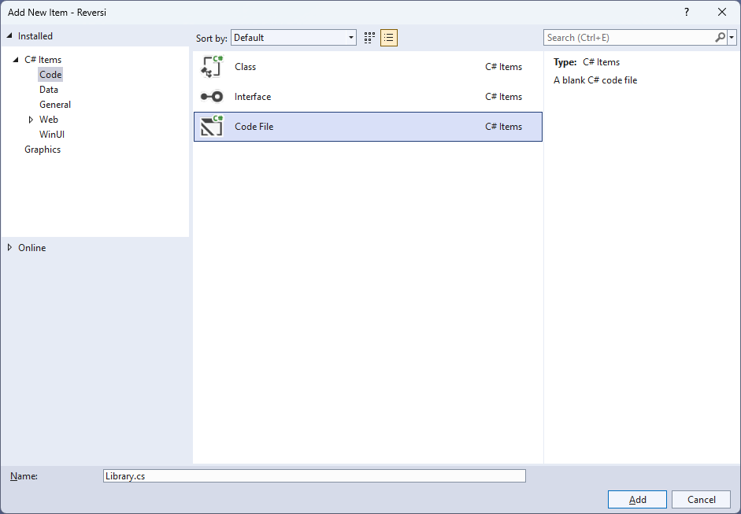
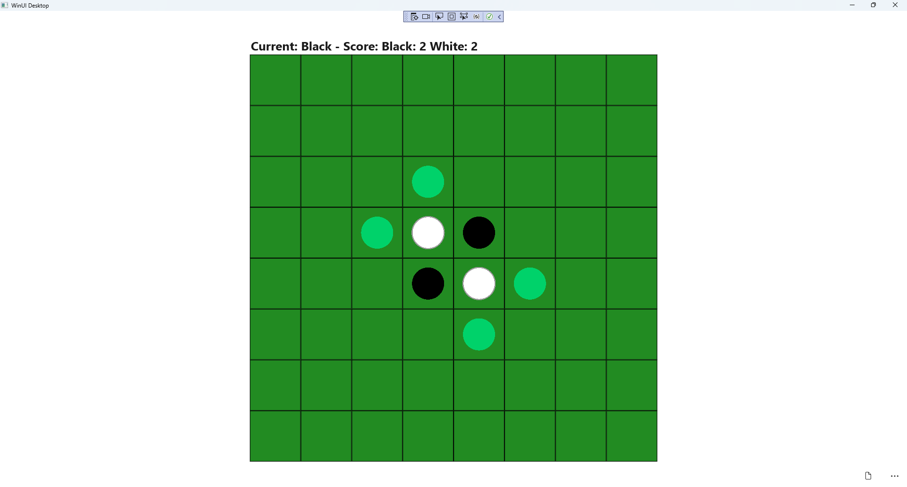

Reversi
Learn creating a Reversi game using Windows App SDK with this Tutorial
Reversi shows how you can create the game of Reversi or Othello based on the work by OttoBotCode, using emoji and with a toolkit from NuGet using the Windows App SDK.
Step 1
Follow Setup and Start on how to get Setup and Install what you need for Visual Studio 2022 and Windows App SDK.


Step 2
Then in Visual Studio within Solution Explorer for the Solution, right click on the Project shown below the Solution and then select Manage NuGet Packages...

Step 3
Then in the NuGet Package Manager from the Browse tab search for Comentsys.Toolkit.WindowsAppSdk and then select Comentsys.Toolkit.WindowsAppSdk by Comentsys as indicated and select Install

This will add the package for Comentsys.Toolkit.WindowsAppSdk to your Project. If you get the Preview Changes screen saying Visual Studio is about to make changes to this solution. Click OK to proceed with the changes listed below. You can read the message and then select OK to Install the package.
Step 4
Then while still in the NuGet Package Manager from the Browse tab search for Comentsys.Assets.FluentEmoji and then select Comentsys.Assets.FluentEmoji by Comentsys as indicated and select Install

This will add the package for Comentsys.Assets.FluentEmoji to your Project. If you get the Preview Changes screen saying Visual Studio is about to make changes to this solution. Click OK to proceed with the changes listed below. You can read the message and then select OK to Install the package, then you can close the tab for Nuget: Reversi by selecting the x next to it.
Step 5
Then in Visual Studio within Solution Explorer for the Solution, right click on the Project shown below the Solution and then select Add then New Item…

Step 6
Then in Add New Item from the C# Items list, select Code and then select Code File from the list next to this, then type in the name of Library.cs and then Click on Add.

Step 7
You will now be in the View for the Code of Library.cs, within this type the following Code:
using Comentsys.Assets.FluentEmoji;
using Comentsys.Toolkit.Binding;
using Comentsys.Toolkit.WindowsAppSdk;
using Microsoft.UI;
using Microsoft.UI.Text;
using Microsoft.UI.Xaml;
using Microsoft.UI.Xaml.Controls;
using Microsoft.UI.Xaml.Input;
using Microsoft.UI.Xaml.Media;
using System;
using System.Collections.Generic;
using System.Linq;
using System.Threading.Tasks;
namespace Reversi;
public enum Player
{
None, Black, White
}
// Extensions, Position and Move Class
public class State
{
// State Variables, Is Inside & Outflanked
// Is Valid, Get Valid, Set Flip, Set Count & Swap
// Get Winner, Set Turn & Constructor
// Move & Occupied
}
public class Library
{
// Constants, Variables, Get Source, Set Source, Set Valid & Get Valid
// Player Source, Get Player, Get Score, Set Text, Set Flip & Set
// Add & Play
// Layout & New
}
So far in Library.cs has using for Comentsys.Toolkit.WindowsAppSdk and others along with a namespace which allows many classes to be
defined together, usually a class is defined per file but to make things easier each will be defined in Library.cs instead.
Step 8
Still in Library.cs for the namespace of Reversi in Library.cs you can define a class for Extensions, Position and Move
after the Comment of // Extensions, Position & Move Class by typing the following:
public static class Extensions
{
public static Player Other(this Player player) =>
player switch
{
Player.Black => Player.White,
Player.White => Player.Black,
_ => Player.None
};
}
public class Position
{
public int Row { get; set; }
public int Column { get; set; }
public Position(int row, int column) =>
(Row, Column) = (row, column);
public override bool Equals(object obj) =>
obj is Position pos && Row == pos.Row && Column == pos.Column;
public override int GetHashCode() =>
Row.GetHashCode() + Column.GetHashCode();
}
public class Move
{
public Player Player { get; set; }
public Position Position { get; set; }
public IEnumerable<Position> Outflanked { get; set; }
public IEnumerable<Position> PreviousValid { get; set; }
public Move(Player player, Position position,
IEnumerable<Position> outflanked, IEnumerable<Position> previousValid) =>
(Player, Position, Outflanked, PreviousValid) =
(player, position, outflanked, previousValid);
}
Extensions is used to define an extension Method for Player, then Position is used to define
the location of a piece in the game and Move is used to define which moves are possible and uses Position.
Step 9
Still in the namespace of Reversi in Library.cs and in the class of State, after the Comment of // Variables, Is Inside & Outflanked type
the following Variables which represent values in the game along with the gameboard along with Methods for IsInside which determines if
a location is inside another and Outflanked which are used do get the positions to outflank the other player in the game.
private const int rows = 8;
private const int columns = 8;
public Player[,] Board { get; }
public Dictionary<Player, int> Count { get; }
public Player Current { get; private set; }
public bool Over { get; private set; }
public Player Winner { get; private set; }
public Dictionary<Position, IEnumerable<Position>> Valid { get; private set; }
private bool IsInside(int row, int column) =>
row >= 0 && row < rows && column >= 0 && column < columns;
private IEnumerable<Position> Outflanked(
Position position, Player player, int rowOffset, int columnOffset)
{
List<Position> outflanked = new();
int row = position.Row + rowOffset;
int column = position.Column + columnOffset;
while (IsInside(row, column) && Board[row, column] != Player.None)
{
if (Board[row, column] == player.Other())
{
outflanked.Add(new Position(row, column));
row += rowOffset;
column += columnOffset;
}
else if (Board[row, column] == player)
return outflanked;
}
return Enumerable.Empty<Position>();
}
private IEnumerable<Position> Outflanked(Position position, Player player)
{
List<Position> outflanked = new();
for (int rowOffset = -1; rowOffset <= 1; rowOffset++)
{
for (int columnOffset = -1; columnOffset <= 1; columnOffset++)
{
if (rowOffset == 0 && columnOffset == 0)
continue;
outflanked.AddRange(
Outflanked(position, player, rowOffset, columnOffset));
}
}
return outflanked;
}
Step 10
While still in the namespace of Reversi in Library.cs and the class of State and after the Comment
of // Is Valid, Get Valid, Set Flip, Set Count & Swap type the following Methods:
private bool IsValid(
Player player, Position position, out IEnumerable outflanked)
{
outflanked = Board[position.Row, position.Column] == Player.None ?
Outflanked(position, player) : Enumerable.Empty();
return outflanked.Any();
}
private Dictionary<Position, IEnumerable<Position>> GetValid(Player player)
{
Dictionary<Position, IEnumerable<Position>> valid = new();
for (int row = 0; row < rows; row++)
{
for (int column = 0; column < columns; column++)
{
var position = new Position(row, column);
if (IsValid(player, position, out IEnumerable outflanked))
{
valid[position] = outflanked;
}
}
}
return valid;
}
private void SetFlip(IEnumerable<Position> positions)
{
foreach (var position in positions)
{
Board[position.Row, position.Column] =
Board[position.Row, position.Column].Other();
}
}
private void SetCount(Player player, int count)
{
Count[player] += count + 1;
Count[player.Other()] -= count;
}
private void Swap()
{
Current = Current.Other();
Valid = GetValid(Current);
}
IsValid is used to determine if a location can be placed onto and is used with GetValid to determine this for a given player.
SetFlip is used to flip a player and this takes advantage of the Method defined in Extensions which is also used in SetCount
to update counter for a player and Swap to switch players.
Step 11
While still in the namespace of Reversi in Library.cs and the class of State and after
the Comment of // Get Winner, Set Turn & Constructor type the following Methods:
private Player GetWinner()
{
if (Count[Player.Black] > Count[Player.White])
return Player.Black;
if (Count[Player.Black] < Count[Player.White])
return Player.White;
return Player.None;
}
private void SetTurn()
{
Swap();
if (Valid.Any())
return;
Swap();
if (Valid.Count == 0)
{
Current = Player.None;
Over = true;
Winner = GetWinner();
}
}
public State()
{
Board = new Player[rows, columns];
Board[3, 3] = Player.White;
Board[3, 4] = Player.Black;
Board[4, 3] = Player.Black;
Board[4, 4] = Player.White;
Count = new Dictionary<Player, int>()
{
{ Player.Black, 2 },
{ Player.White, 2 }
};
Current = Player.Black;
Valid = GetValid(Current);
}
GetWinner will be used to check which of the players is the winner or if there is no winner. SetTurn will swap the players
around so each can take their turn and the Constructor for State will setup the initial configuration and positions of the
players to start the game.
Step 12
While still in the namespace of Reversi in Library.cs and the class of State and after
the Comment of // Move & Occupied type the following Methods:
public bool Move(Position position, out Move move)
{
if (!Valid.ContainsKey(position))
{
move = null;
return false;
}
var player = Current;
var previous = Valid.Keys;
var outflanked = Valid[position];
Board[position.Row, position.Column] = player;
SetFlip(outflanked);
SetCount(player, outflanked.Count());
SetTurn();
move = new Move(player, position, outflanked, previous);
return true;
}
public IEnumerable<Position> Occupied()
{
for (int row = 0; row < rows; row++)
{
for (int column = 0; column < columns; column++)
{
if (Board[row, column] != Player.None)
yield return new Position(row, column);
}
}
}
Move will be used to place a player on the board and flip the pieces the opposing player has placed appropriately to
complete a move in the game and Occupied is used to determine which places on the board are not currently occupied by any player.
Step 13
While still in the namespace of Reversi in Library.cs and the class of Library after
the Comment of // Constants, Variables, Get Source, Set Source, Set Valid & Get Valid type the following
Constants, Variables and Methods:
private const string title = "Reversi";
private const int square_size = 100;
private const int disc_size = 72;
private const int font = 24;
private const int size = 8;
private ImageSource[] _sources;
private State _state;
private TextBlock _text;
private Dialog _dialog;
private Grid _grid;
private async Task<ImageSource> GetSourceAsync(FluentEmojiType type) =>
await FlatFluentEmoji.Get(type).AsImageSourceAsync();
private async Task SetSourceAsync() =>
_sources ??= (new ImageSource[]
{
await GetSourceAsync(FluentEmojiType.GreenCircle),
await GetSourceAsync(FluentEmojiType.BlackCircle),
await GetSourceAsync(FluentEmojiType.WhiteCircle)
});
private void SetSource(Position position, ImageSource source) =>
_grid.Children.Cast<Grid>()
.First(f => Grid.GetRow(f) == position.Row
&& Grid.GetColumn(f) == position.Column)
.Children.Cast<Image>().First().Source = source;
private void SetValid(IEnumerable<Position> positions, ImageSource source)
{
foreach (var position in positions)
{
var square = _state.Board[position.Row, position.Column];
if (square == Player.None)
SetSource(position, source);
}
}
private ImageSource GetValid(int row, int column) =>
_state.Valid.ContainsKey(new Position(row, column)) ? _sources[0] : null;
Constants are values that are used in the game that will not change and Variables are used to store various values and controls needed for the game.
GetSourceAsync, SetSourceAsync and SetSource are used to set the Emoji used to represent the players in the game.
SetValid is used to set a valid position and GetValue is used to get a valid position.
Step 14
While still in the namespace of Reversi in Library.cs and the class of Library after
the Comment of // Player Source, Get Player, Get Score, Set Text, Set Flip & Set type the following Methods:
private ImageSource PlayerSource(int row, int column)
{
var player = _state.Board[row, column];
return player != Player.None ? _sources[(int)player] : GetValid(row, column);
}
private string GetPlayer(Player player) =>
Enum.GetName(typeof(Player), player);
private string GetScore() =>
$"Score: {GetPlayer(Player.Black)}: {_state.Count[Player.Black]} {GetPlayer(Player.White)}: {_state.Count[Player.White]}";
private void SetText() =>
_text.Text = $"Current: {GetPlayer(_state.Current)} - {GetScore()}";
private void SetFlip(Move move)
{
foreach (var position in move.Outflanked)
SetSource(position, _sources[(int)move.Player]);
}
private void Set(Position position, Move move)
{
SetValid(move.PreviousValid, null);
var player = _state.Board[position.Row, position.Column];
if (player != Player.None)
SetSource(position, _sources[(int)player]);
SetFlip(move);
SetValid(_state.Valid.Keys, _sources[0]);
SetText();
}
PlayerSource will get the image needed to represent a player where valid, GetPlayer will get the name of the player.
GetScore will be used to get the score for both players, and this will be used by SetText to display this.
SetFlip will be used to flip the player images where needed and Set will be used to perform a move in the
game and update the valid locations.
Step 15
While still in the namespace of Reversi in Library.cs and the class of Library after
the Comment of // Play & Add type the following Methods:
private void Play(Position position)
{
if (!_state.Over)
{
if (_state.Move(position, out Move move))
Set(position, move);
}
else
{
_dialog.Show(
$"Game Over! Winner: {GetPlayer(_state.Winner)} - {GetScore()}");
}
}
private void Add(int row, int column)
{
Grid square = new()
{
Width = square_size,
Height = square_size,
BorderThickness = new Thickness(1),
BorderBrush = new SolidColorBrush(Colors.Black),
Background = new SolidColorBrush(Colors.ForestGreen)
};
Image image = new()
{
Width = disc_size,
Height = disc_size,
Source = PlayerSource(row, column)
};
square.Children.Add(image);
square.SetValue(Grid.RowProperty, row);
square.SetValue(Grid.ColumnProperty, column);
square.Tapped += (object sender, TappedRoutedEventArgs e) =>
Play(new Position((int)((Grid)sender).GetValue(Grid.RowProperty),
(int)((Grid)sender).GetValue(Grid.ColumnProperty)));
_grid.Children.Add(square);
}
Play used to perform a move in the game or indicate the game is over with a message and Add will be used to add the squares
that make up the layout of the board and will respond to the Event of Tapped and will call Play along with
adding an Image that will represent the player for the square.
Step 16
While still in the namespace of Reversi in Library.cs and the class of Library after
the Comment of // Layout & New type the following Methods:
private void Layout(Grid grid)
{
grid.Children.Clear();
StackPanel panel = new()
{
Orientation = Orientation.Vertical
};
_text = new TextBlock()
{
FontSize = font,
Margin = new Thickness(2),
FontWeight = FontWeights.Bold,
VerticalAlignment = VerticalAlignment.Center
};
SetText();
panel.Children.Add(_text);
_grid = new Grid();
for (int row = 0; row < size; row++)
{
_grid.RowDefinitions.Add(new RowDefinition());
for (int column = 0; column < size; column++)
{
if (row == 0)
_grid.ColumnDefinitions.Add(new ColumnDefinition());
Add(row, column);
}
}
panel.Children.Add(_grid);
grid.Children.Add(panel);
}
public async void New(Grid grid)
{
_grid = grid;
_state = new State();
await SetSourceAsync();
_dialog = new Dialog(grid.XamlRoot, title);
Layout(grid);
}
Layout will create the look-and-feel of the game by setting up all the elements and New will setup and start a new game.
Step 17
Step 18
In the XAML for MainWindow.xaml there will be some XAML for a StackPanel, this should be Removed:
<StackPanel Orientation="Horizontal"
HorizontalAlignment="Center" VerticalAlignment="Center">
<Button x:Name="myButton" Click="myButton_Click">Click Me</Button>
</StackPanel>
Step 19
While still in the XAML for MainWindow.xaml above </Window>, type in the following XAML:
<Grid>
<Viewbox>
<Grid Margin="50" Name="Display"
HorizontalAlignment="Center"
VerticalAlignment="Center" Loaded="New"/>
</Viewbox>
<CommandBar VerticalAlignment="Bottom">
<AppBarButton Icon="Page2" Label="New" Click="New"/>
</CommandBar>
</Grid>
This XAML contains a Grid with a Viewbox which will Scale a Grid.
It has a Loaded event handler for New which is also shared by the AppBarButton.
Step 20
Step 21
In the Code for MainWindow.xaml.cs there be a Method of myButton_Click(...) this should be Removed by removing the following:
private void myButton_Click(object sender, RoutedEventArgs e)
{
myButton.Content = "Clicked";
}
Step 22
Once myButton_Click(...) has been removed, within the Constructor of public MainWindow() { ... } and below the line of this.InitializeComponent(); type in the following Code:
private readonly Library _library = new();
private void New(object sender, RoutedEventArgs e) =>
_library.New(Display);
Here an Instance of Library is created then below this is the Method of New that will be used with Event Handler
from the XAML, this Method uses Arrow Syntax with the => for an expression body which is useful when a Method only has one line.
Step 23
Step 24
Once running you can then tap on the appropriate indicated Square to place either a White or Black counter on the board to play the game until the game is over or the player with the highest score wins or select New to start a new game.

Step 25